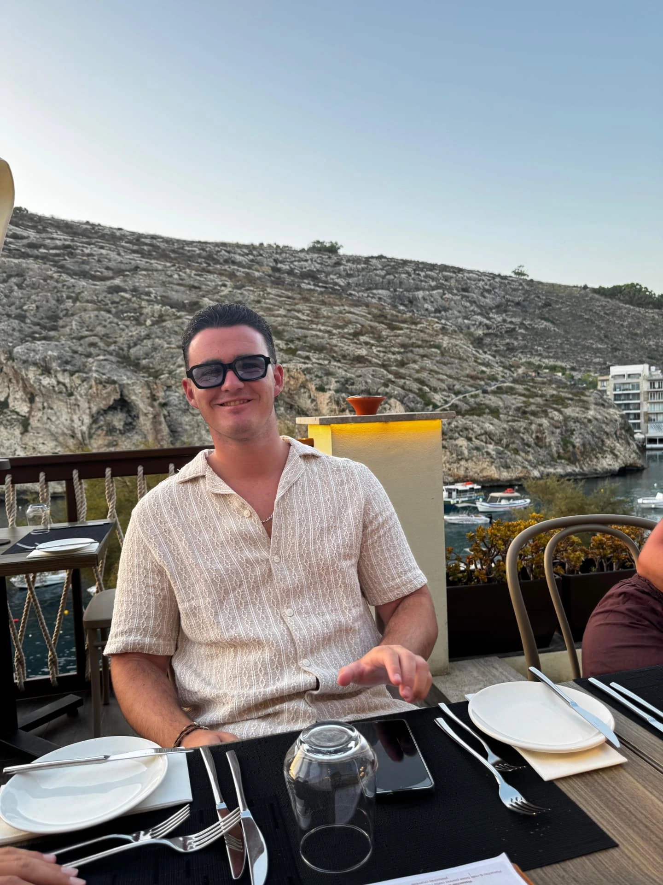
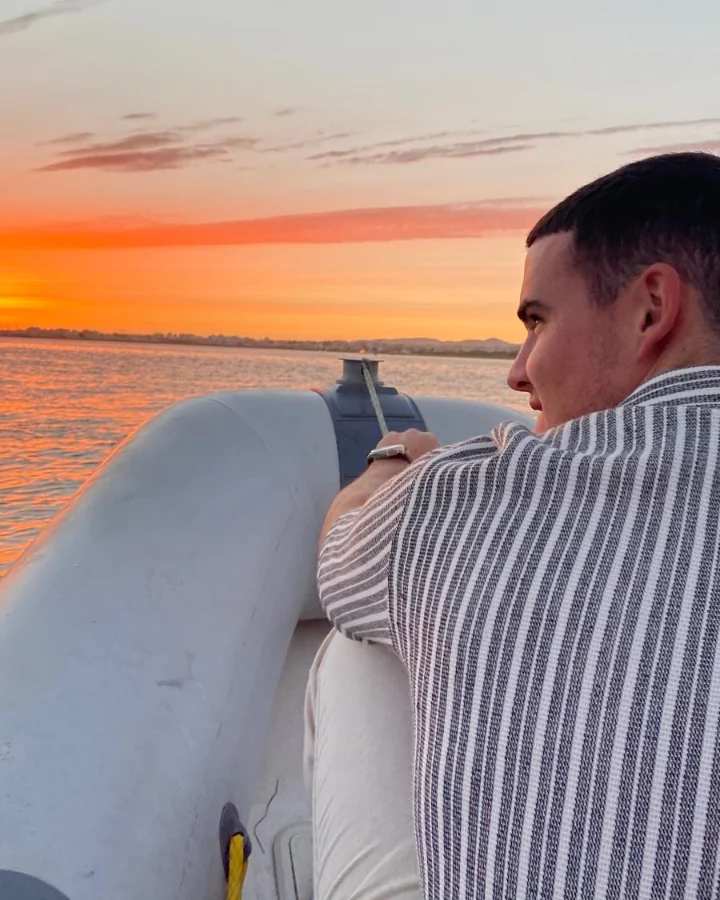
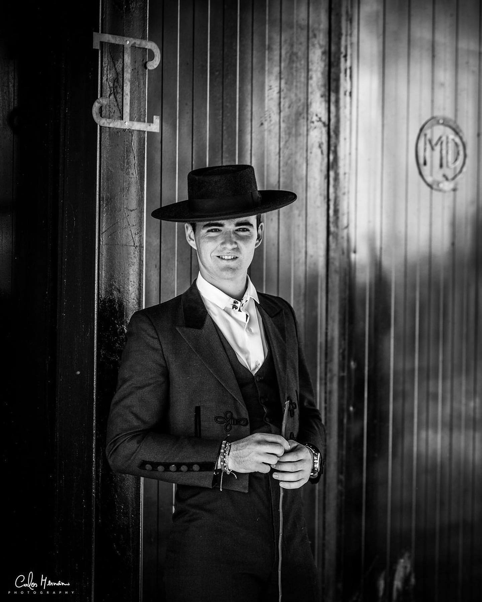

"O monitor que ensinou as nossas crianças a voar a cavalo com paciência, segurança e muito carinho. Boa sorte na nova jornada em Abu Dhabi!"

Monitor Angelo, nem sabemos como te agradecer por tudo o que nos ensinaste! Foste muito mais do que um professor, foste o nosso grande amigo no picadeiro. Com a tua paciência gigante e o teu sorriso sempre pronto, mostraste-nos como é divertido e mágico o mundo dos cavalos e dos pónis.
Contigo aprendemos a não ter medo, a montar com confiança e a respeitar muito os animais. Cada aula era uma aventura nova e fizeste com que todos nós nos sentíssemos corajosos e especiais. Nunca vamos esquecer as brincadeiras e as barreiras que saltámos juntos!
Saber que vais para Abu Dhabi deixa-nos com muitas saudades, mas achamos o máximo que vás ensinar meninos noutro país! Desejamos-te a maior sorte do mundo nesta tua nova aventura. Não te esqueças de nós, porque nós nunca nos vamos esquecer de ti. O picadeiro vai ficar mais vazio, mas seremos sempre os teus cavaleiros. Voa alto, Monitor Angelo!

"A equitação não é sobre controlo físico ou força. É sobre ligação, cumplicidade e falar a mesma língua que o cavalo."
"Cair do cavalo faz parte do percurso. O segredo é ter a coragem de nos levantarmos, bater o pó e voltar a montar com o mesmo sorriso."
"Os cavalos não nos julgam. Eles são o espelho mais honesto da nossa própria alma. Se estiveres calmo, ele estará calmo."

Partilhe uma memória, um agradecimento ou palavras de carinho em memória do monitor Angelo.